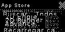
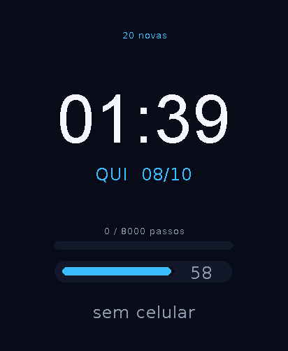

A malha em uma tela #
Quem tem matilha hoje: as placas com BLE no build padrão — SmartDisplay,
cachorro (Spotpear) e relógio (Waveshare). A CYD clássica tem um build experimental
com NimBLE (build-cyd-bt), mas flash/RAM são limítrofes. O app
Matilha avisa na placa sem rádio.
A matilha no vidro #
Estas telas são da malha real de 3 placas na bancada — cada painel listando os outros dois nós com papel, sinal em dBm e saltos:



O protocolo em números #
Quadro de 31 bytes crus no advertising (magic 'C''N', versão 2),
sem estrutura AD e sem conexão — por isso alcança tanto e gasta tão pouco:
'C''N' | ver=2 | tipo | netId(2) | src(2) | dst(2) | seq(2) | ttl | hops | dlen | dados… BEAT = presença → dados: [caps(1)][nome NUL] · a cada 3 s, nó expira em 15 s DATA = mensagem → até 16 B inteiros num quadro FRAG = fragmento → [idx|cópia][total][chunk ≤14 B] · mensagem máxima 434 B
| Limite | Valor |
|---|---|
| mensagem máxima | 434 B (31 fragmentos × 14 B) |
| TTL (saltos) | 1..8, default 4 |
| vazão por nó | 8 pacotes/s (token bucket, rajada 16) — ~185 ms de ar por quadro |
| presença | 16 nós na tabela; sem BEAT por 15 s = saiu |
| unicast confiável | 1..3 cópias espaçadas 1,5 s + dedup (src,seq,idx) |
| relay educado | jitter por TTL e fora da frente da rajada de fragmentos; supressão se outro já repetiu |
| memória | estado grande (~3,6 KB) na PSRAM; gate de RAM interna; watchdog do burst |
| rede lógica | netId = hash do nome da rede (default celer) — v1 em claro |
Sem ACK no rádio. A resposta do protocolo é a resposta da aplicação — um 434 B × 2 cópias são 62 quadros (~11 s de ar); mensagens de até 16 B cabem num quadro só e são muito mais confiáveis. O Sonar mede perda real com pings de 1 quadro e zero cópias.
A API no JavaScript #
Duas camadas: CelerNet.* (transporte cru, API 26/27) e Pack.*
(a matilha com papéis e envelopes, API 27). Só existe em placa com BLE — detecte com
typeof CelerNet !== "undefined".
if (typeof CelerNet === "undefined") { /* placa sem BLE */ }
CelerNet.start({}); // entra na malha (nome/rede default)
var bando = Pack.members(); // [{id,name,caps,rssi,hops,lastSeen}]
// ordenados por sinal, papel de cada um
CelerNet.broadcast("olá matilha!"); // 1..434 B (cru) p/ todo mundo, TTL 4
Pack.send("Celer-Dog", "passeia!"); // unicast confiável por NOME ou id
// destino sumido => false (sem throw)
var msg;
while ((msg = CelerNet.poll())) { // fila RX (8): {from, fromName, msg, hops, rssi}
draw(msg.fromName + ": " + msg.msg);
}
while ((msg = Pack.poll())) { } // envelopes custom (dedup já feito)
Pack.handoffMusic(); // a música tocando AQUI passa pro
// vizinho com speaker mais forte| Função | Retorna |
|---|---|
CelerNet.start/stop | bool — o toggle persiste entre boots/apps |
CelerNet.broadcast(msg[, ttl]) | bool; msg 1..434 B (objeto vira JSON) |
CelerNet.send(to, msg[, opts]) 27 | bool; unicast com ttl/urgent/copies |
CelerNet.poll() / CelerNet.nodes() | mensagem ou null / presença com caps e hops |
CelerNet.status() | contadores vivos (fila, drops, relays, falhas de TX) |
Pack.me() / Pack.members() | meu papel ({speaker,mic,display,motors,leds,hub}) / o bando |
Pack.send(to, msg) / Pack.poll() | envelopes ≤ 430 B com dedup por msgId |
Pack.handoffMusic([to]) | passa a sessão de música (to=0 escolhe o speaker mais forte) |
A música itinerante #
A API 25 trouxe o System.playMusic — um sintetizador de até 4 trilhas
(onda quadrada/triângulo/serra ou bateria GM) que toca sem bloquear o app. A API 27
fechou o ciclo: handoffMusic serializa a sessão inteira (música + posição
em ms) num envelope urgente e o vizinho retoma do mesmo milissegundo — uma
orquestra em que a placa que toca pode mudar no meio da música:
System.playMusic({
bpm: 128, loops: 4,
tracks: [
{ wave: "sq", vol: 80, notes: [[64,8],[67,8],[71,8],[72,16],[0,16],[64,8]] },
{ drum: true, vol: 90, notes: [[36,8],[0,8],[38,8],[0,8],[42,4],[42,4],[38,8]] }
]
});
// System.musicPos() → ms · System.musicStop() · System.musicPlaying()
Pack.handoffMusic("Celer-AB3E"); // entrega e PARA aqui; a outra retomaCelerLink — o par-a-par #
Enquanto a CelerNet é gritaria em advertising, o CelerLink é a conversa reservada: conexão BLE GATT de alta vazão (mensagens de 240 B), pareamento por código de 6 dígitos, bonds no NVS e mensagens seladas com AES-128-GCM (API 21). Liga CelerOS↔CelerOS (telemetria do cachorro, controles remotos) e, novo, PC↔CelerOS. O telefone conecta pelo PhoneLink (Gadgetbridge) no relógio.
pip install bleak # só para o 'link' sudo python3 tools/matilha/matilha.py mesh listen --relay # nó CelerNet de verdade sudo python3 tools/matilha/matilha.py mesh nodes # quem está no ar sudo python3 tools/matilha/matilha.py mesh ping Celer-Dog # RTT real (app Sonar) sudo python3 tools/matilha/matilha.py mesh census # ID · bateria · uptime python3 tools/matilha/matilha.py link scan # Celer-* por perto python3 tools/matilha/matilha.py link send Celer-Dog "sit" # par-a-par selado
O mesh fala HCI cru (precisa de root e de um adaptador dedicado —
pare o bluetoothd ou use --hci 1); o link usa bleak e roda
como usuário. Um adaptador não faz os dois ao mesmo tempo.
Os apps da matilha #
Matilha
App de sistema: liga a malha, mostra quem sou (papel), o bando com sinal/idade, mensagem direta ou pra todos, e o botão de passar a música.
Sonar
Radar em anéis de hops com o papel de cada nó; ping real de 1 quadro (sem cópias — a perda é medida, não mascarada) e censo de bateria.
Coral
Orquestra distribuída: vozes por placa com entrada sincronizada descontando a latência de cada salto.
Mural
Quadro de recados que sincroniza por Trickle (RFC 6206) — alcança até quem estava desligado quando a mensagem nasceu.
Sentinela
Alarme em rede (até 8 hops) com anti-tamper: nó que some do ar dispara o bando. Protegido por PIN.
Batata Quente · Pong Duplo
Jogos da malha: a batata circula por unicast com ACK em broadcast; o Pong Duplo é CelerLink par-a-par de baixa latência.
Bancada e simulador #
- PackBench — suíte E2E em 3 placas: presença com papéis, RTT de unicast com ACK, broadcast com confirmações e handoff de música com prova de retomada.
- MeshLab — bateria A/B das variantes de rádio
(
/local/celernet_tune.txt: duração do adv, relay diferido, supressão). - meshsim — simulador no host (
node test/meshsim/run.js): apps reais em N nós virtuais com perda por enlace, filas e relógio virtual.
O resultado dessa bancada está nos números da tabela acima — o relay "fora da frente" da rajada de fragmentos, por exemplo, tirou a entrega de 100 B de 3-4/10 para praticamente total na bancada de 3 placas.